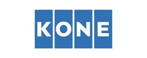
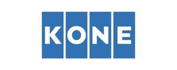
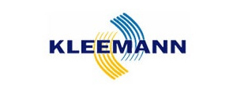
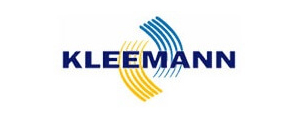

Москва, ул. Шереметьевская, д.85, стр.2
Москва, ул. Шереметьевская, д.85, стр.2 info@pklift.ru
info@pklift.ru +7 (495) 782-12-26
+7 (495) 782-12-26


Главная / Услуги / Грузовые лифты
Грузовые лифты
Одним из профильных направлений работы нашей компании является поставка, техобслуживание и монтаж грузовых лифтов с гарантией производителя. Мы работаем со всеми видами оборудования этой категории, включая электрические, гидравлические агрегаты, модели общего или специального назначения (к примеру, предназначенные для работы во взрывоопасной среде или для транспортировки автомобилей).
Стоимость грузовых лифтов - от 700 000р.
Техническое обслуживание грузовых лифтов от 5000р.
Покупка грузового лифта – экономически оправданное вложение, так как оно позволяет сэкономить ресурсы и существенно повысить производительность отдельных подразделений или предприятия в целом. Но всех перечисленных преимуществ удаётся добиться только в том случае, когда оборудование выбрано правильно.
.png)

Грузоподъёмность лифта
В данном случае основной технической характеристикой лифтов является их грузоподъёмность. Она должна быть выше, чем максимальный вес груза, который планируется поднимать с их помощью (рекомендуется закладывать запас в 15-20 % для того, чтобы исключить работу агрегатов со 100-процентной загрузкой и за счёт этого существенно продлить срок их службы).
Малые грузовые лифты. Чаще всего такие модели используются в магазинах,
библиотеках, офисных зданиях, в ресторанах. Их грузоподъёмность составляет
до 160 кг.
Грузовые модели, предназначенные для перевозки товаров весом до 2000 кг.
Они устанавливаются в супермаркетах, на оптовых базах, предприятиях.
Производственные лифты, используемые на предприятиях, в шахтах, смогут
поднимать грузы весом до 5 т. Их отличительной особенностью является
небольшая скорость движения при подъёме (0,25 м/с).
Тип провода лифта
Одним из основных критериев выбора лифтового оборудования является тип его привода. Для того чтобы не совершить ошибку, стоит ориентироваться на несколько основных факторов.
- Энергозатраты. В данном случае оба варианта практически равны по своему энергопотреблению. Распространено заблуждение, что грузовые лифты с гидравлическим приводом в этом отношении выгоднее, так как он опускается под собственным весом. Но на самом деле за счёт наличия противовеса эта разница полностью компенсируется с увеличением массы подъёмника.
- Скорость движения. Может иметь принципиальное значение тот факт, что электрические модели имеют большую скорость движения и высоту подъёма по сравнению с гидравлическими.
- Шум. Важным преимуществом использования моделей с гидравлическим приводом является возможность установки агрегатов вне помещений для повышения звукоизоляции.
- Сложность монтажа. Электрические модели отличаются необходимостью подведения большого количества кабелей, необходимостью устройства машинного отделения радом с самой шахтой.
- Важно учитывать и особенности работы грузовых лифтов с разными типами привода. В частности, в случае отключения электроэнергии электрический агрегат не потребует обязательной установки резервного генератора, так как он автоматически опустится в данной ситуации на первый этаж. Не менее важно и то, что грузовые лифты с гидравлическим приводом отличаются более плавным ходом, большей точностью остановки и простотой монтажа всей конструкции. Только они могут быть смонтированы в условиях, когда имеется одна несущая стена.
- Особенности конструкции и исполнения. При выборе принимаются во внимание габаритные размеры грузов, особенности расположения подъёмника в здании. Это позволит купить грузовой лифт, который будет максимально удобен для сотрудников (в частности, можно выбрать модель с загрузкой с одной или двух сторон). Не менее важно учитывать и условия эксплуатации, т.к. выпускаются модели, рассчитанные на работу в условиях высокой влажности, повышенной взрыво- или пожароопасности.
Автомобильные грузовые лифты
Ключевым отличием стандартных грузовых от автомобильных лифтов является то, что по своим габаритным размерам последние могут вмещать целый автомобиль (при этом водитель во время такой перевозки может находиться в салоне). При помощи специальных отбойников обеспечивается его безопасность от случайных повреждений во время движения. Есть возможность выбора проходной или непроходной модели. В первом случае предусматривается наличие второй пары дверей, которые в зависимости от особенностей помещения позволят выехать в противоположном направлении. В результате использование проходного автомобильного лифта увеличивает стоимость оборудования, но делает его более функциональным и удобным в использовании.
Основными параметрами выбора таких подъёмников становится бесшумность работы, экономичность и скорость движения. Огромное значение имеет точность остановки (она должна быть выше, чем у пассажирского), от которой зависит возможность выехать из кабины. В зависимости от модели и особенностей использования грузоподъёмность может составлять от 3 до 10 т. Также можно купить грузовой лифт для автомобилей промышленного класса, которые позволяют перемещать тяжёлый спецтранспорт.
.png)
.png)
.png)
.png)
Монтаж грузовых лифтов
Существует несколько наиболее эффективных технологий выполнения монтажных работ. Выбор между ними определяется особенностями конкретного объекта, его эксплуатации и возможностью использования спецтехники. Чаще всего используется технология поэлементного монтажа. При этом сборка лифтового оборудования выполняется непосредственно в шахте из соответствующих деталей агрегата. После этого выполняется точная настройка и подключение оборудования, проверка его работоспособности. Наиболее актуальным поэлементный монтаж является в тех случаях, когда лифт нужно смонтировать в здании, которое уже эксплуатируется.
Монтаж грузовых лифтов также может быть выполнен укрупнёнными блоками. В этом случае все основные узлы оборудования предварительно собираются в заводских условиях, поэтому на объекте работы занимают минимум времени. Но важной особенностью таких работ является то, что для их выполнения потребуется использование крановой техники. Самой сложной в исполнении является технология тюбингового монтажа. Он возможен только на этапе строительства здания. При этом оборудование поставляется фактически в собранном виде. Но если требуется только замена старого грузового лифта на новый, использовать этот способ будет невозможно.
У нас вы сможете купить любую модель оборудования по выгодным ценам. Предоставляются услуги монтажа, профессионального обслуживания техники. Мы гарантируем, что реализуемые нами лифты отвечают всем критериям надёжности, полностью соответствуют нормам действующих правовых актов. Позвоните нам, чтобы получить более подробную информацию по всем возникшим вопросам.
Обратная связь
Наши партнеры
 



 
